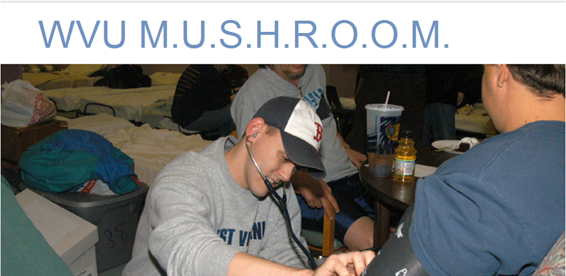

WVU M.U.S.H.R.O.O.M.

WVU Mushroom makes "street rounds" every two weeks to homeless in the Morgantown area. They provide basic medical services, seasonally appropriate supplies and partner with social programs.
What Do They Need Most?
Supplies
- Personal Hygiene Items
- PBJs
- Juices
- Crackers
- Fruit & Other Snacks
Volunteers
- On Thursdays the group
- will meet in the lower
- level of the Pleasant Street
- Parking Garage at 6:45pm